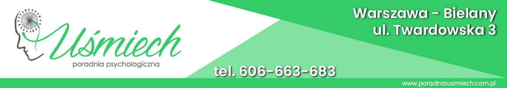

TUS - Trening Umiejętności Społecznych to zajęcia wspierające dzieci w rozwijaniu pewności
siebie, lepszym rozumieniu własnych emocji i zachowań, a także dostrzeganiu i rozumieniu emocji oraz
potrzeb innych osób. Ważnym elementem zajęć jest również rozwijanie umiejętności komunikowania się i
budowania relacji z rówieśnikami.
Program zajęć jest elastyczny i dostosowywany do aktualnych potrzeb oraz trudności dzieci
uczestniczących w grupie. Dzięki temu poruszane zagadnienia odpowiadają na rzeczywiste wyzwania, z
którymi dzieci spotykają się w codziennych sytuacjach.
Zajęcia mają przede wszystkim charakter edukacyjny i praktyczny. Dzieci zdobywają nową wiedzę oraz
ćwiczą konkretne umiejętności poprzez zabawę, aktywności grupowe, ćwiczenia oraz zadania przygotowane
przez prowadzącego. Dzięki temu mogą w bezpiecznych warunkach próbować nowych sposobów reagowania i
komunikowania się z innymi.
TUS to przestrzeń, w której dzieci mogą uczyć się rozumieć siebie, lepiej odnajdywać się w relacjach z innymi i z większą pewnością mierzyć się z codziennymi wyzwaniami — przede wszystkim poprzez doświadczenie, zabawę i wspólne działanie.
Trening Umiejętności Społecznych dla grupy wiekowej 7-9 lat odbywać się będzie w okresie
od
2 paździenika 2026 do 22 stycznia 2027 czyli 15 spotkań z wyłączeniem świąt i dni wolnych.
29 stycznia 2026 r każdy rodzic będzie miał możliwość bezpłatnego, indywidualnego spotkania z prowadzącym w celu omówienia postępów dziecka.
Minimalna ilość uczestników niezbędna do powstania grupy to 4 osoby maksymalna liczba uczestników to 6.
Przed zajęciami obowiązuje konsultacja z psychologiem (koszt 240 zł) w celu poznania dziecka oraz jego trudności (ewentualnej dokumentacji).
Zajęcia odbywają się raz w tygodniu w piątki (godz 17:30) w cyklu cotygodniowym.
Czas trwania: 50 minut
Koszt zajęć to 2100 zł za cały turnus, opłatę za zajęcia wnosimy za cały cykl w kwocie 2200 zł lub w
dwóch ratach po 1050 zł (pierwsza rata po zakwalifikowaniu się na zajęcia, druga rata do 1 grudnia)
Nabór trwa do wyczerpania miejsc. Liczy się kolejność zgłoszeń oraz spotkanie kwalifikacyjne (50-60
min) – konsultacja z rodzicami/rodzicem i dzieckiem.
Zgłoszenia prosimy kierować na adres email biuro@poradniausmiech.com.pl
lub pod numer telefonu
606-663-683
Zajęcia odbywają się w Poradni Psychologicznej "Uśmiech" przy ulicy Twardowska 3 - Warszawa Bielany